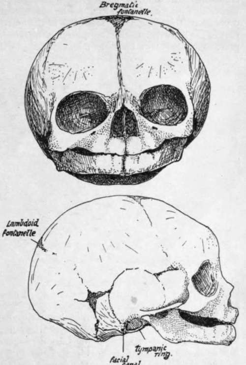
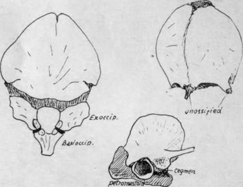

The Development Of The Skull As A Whole. Part 4
Description
This section is from the book "The Anatomy Of The Human Skeleton", by J. Ernest Frazer. Also available from Amazon: The anatomy of the human skeleton.
The Development Of The Skull As A Whole. Part 4
* There is some reason to suppose that the lachrymal and vomer may be formed in tissues belonging to the maxillary process where this is applied to the capsule, when their ossification periods would come into line with the other " maxillary " bones. The outer pterygoid plate is ossified by extension from the sphenoid; it is looked on as a muscular process, and thus as not having a morphological value equal to or as great as that of the inner plate.
+ Before the sutures close the bones of the vault are thickest at their centres and thin away into the fibrous tissue at their edges. After the edges come into contact they begin to increase in thickness and ultimately become the thickest parts. At the same time the central parts of the bones become less prominent.
The lateral fontanelles are as a rule practically, although not actually, closed at birth, and the posterior median interval closes shortly after : the bregmatic fontanelle, however, remains open and palpable from the surface till about the end of the second year, and the observation of its condition is of some clinical value. The various bones of the vault come into complete contact by the age of four or five ; in the case of the frontal the two halves are partly joined at that age : occasionally a bone fails to meet its neighbour and the interval is filled by an accessory centre, constituting a Wormian bone. Such true Wormian bones are to be distinguished from false Wormian bones, which are normal centres that have abnormally failed to join the bone with which they should be fused.
Fontanelles are not confined to the regions mentioned above, for membranous intervals sometimes occur elsewhere wherever parts of the bone do not come together adequately at their usual time : thus a metopic fontanelle may be seen at the root of the nose at the lower end of the metopic suture, an occipital one may occur at the hinder margin of the foramen magnum between the halves of the post-occipital, or a parietal (sagittal) fontanelle may mark the site of the parietal foramen.
There are many things to be noticed about the skull at birth in addition to the fontanelles. In Fig. 212 the skull at birth is shown, and it plainly differs from the adult structure. The most striking thing about the foetal skull is the comparative smallness of the face and largeness of the cranium, but another point of distinction can be found by measurement : a line drawn through the condyles practically divides the foetal base into two equal halves, whereas in the adult the part that lies in front of the line is proportionately much increased and gives a ratio of 17 : 1 instead of 1 : 1, as in the new-born skull. We have therefore to deal with an excessive growth in length in the front part of the skull during the change to the adult type, as well as with a vertical increase, both affecting the anterior portion of the skull ; the former is mainly due to cranial growth in front and the latter mainly to facial increase, but the face increases in depth also with the added cranial length. When the facial growth occurs without the proportionate cranial growth the adult skull presents the appearance of prognatli ism that characterises the heads of the lower races.
Fig. 212.-Foetal skull, about the time of birth. The frontal region is artificially depressed to some extent.
The characters of the face in the new-born skull depend almost entirely on the immature condition of the maxillae and mandible. Each maxilla (Fig. 212) is flattened vertically, owing on the one hand to the almost complete absence of the alveolar process and on the other to the small size of the antrum, which only occupies the inner part of the bone to a small extent, leaving the remainder more or less flat. Whatever prominence there may be in the maxilla is due to the tooth germs embedded in the bone, but these are properly supra-alveolar, as can be seen by comparing the skull with an adult one.
The results of this shallowness of the maxillae can be well seen in the nasal fossae. These are much broader compared with their height than in the adult, and the various bones that make their walls are correspondingly modified : thus the palate has a short but broad vertical plate, the internal pterygoid plate is similarly modified, and the vomer shows a decreased vertical height while its breadth is proportionately greater, and thus it forms a gutter that holds the septal cartilage in it. On the other hand, the ethmoid and lachrymals lie above the level of the maxillary body and are not affected by its subsequent growth, so they present at birth no essential differences, save in size, from the adult conditions. The malar, owing to the want of development of the alveolar region, overhangs the opening of the mouth on each side and may be felt easily through the mucous membrane. Another result of the alveolar deficiency is seen in the hard palate : it is much less curved than in the adult-in fact it is nearly flat, for in the full-grown bone the concavity is largely due to the presence of the alveolar eminences.* The posterior choarue, like the anterior openings, are proportionately less high than in the adult, and their plane is more nearly horizontal.
* In old toothless jaws with loss of alveolar processes there is a return to the flattened palate.
Fig. 213.-Occipital, frontal, and temporal at birth.
The mandible is in two halves joined by fibrous tissue. Each half shows a short ramus making a very large angle (175 degrees) with the body. The body is poorly developed both in its alveolus and its splenial portion, and presents prominences that mark the position of the dental sacs in the bone. The coronoid process is higher with reference to the condyle than in the adult.
Continue to:
- prev: The Development Of The Skull As A Whole. Part 3
- Table of Contents
- next: The Development Of The Skull As A Whole. Part 5